<meta charset="utf-8">
<meta name="viewport" content="width=device-width, initial-scale=1">
<meta name="robots" content="noindex">
<title>Flynn: Kerry to Boston</title>
<link rel="stylesheet" href="style.css">

<nav>
  <a href="index.html">Home</a>
  <a href="quintanilla.html">Quintanilla</a>
  <a href="martinez.html">Martinez</a>
  <a class="here" href="flynn.html">Flynn</a>
  <a href="maccoll.html">MacColl</a>
</nav>

<main>
<h1>Flynn</h1>
<p class="sub">My father's father's line. Famine Irish out of a single townland in County Kerry, then the classic three-generation American climb — and a hard stop in October 1931 that the family never really recovered from.</p>

<p>For most of my life this line was a blank. Two men died young, one after the other, and when that happens twice there is nobody left who was an adult the first time. The stories went with them. What follows was rebuilt out of parish registers, death certificates, censuses and newspapers — and, at last, out of four photographs.</p>

<h2>Curraheen</h2>
<p>In the late 1840s the potato crop failed in Ireland, several years running. Potatoes were most of what poor Irish families ate. About a million people starved and another million-plus got on boats. <strong>Andrew Flynn</strong> was one of them, and we now know exactly where he came from: <strong>Curraheen, a townland just outside Tralee, County Kerry</strong>. He arrived in America in <strong>1850</strong>, the peak of the flight, his arrival year recorded in the 1900 census <span class="badge proven">Proven</span>.</p>

<p>For a long time I pictured him coming alone — a teenager on a boat. He didn't. The 1865 Massachusetts state census lists birthplaces for his brothers and sisters, and they settle it: Johanna, Jeremiah and Mary were all <strong>born in Ireland</strong>, Mary as late as about <strong>1847</strong>; the next child, Catherine, was <strong>born in Massachusetts</strong> around <strong>1851</strong> <span class="badge proven">Proven</span>. So his parents were still in Kerry in 1847 and settled in Shirley by 1851. <strong>The whole family crossed together, in the worst years of the famine.</strong> Andrew's "1850" is the family's arrival, not one boy's.</p>

<p>His parents were <strong>Jeremiah Flynn and Catherine Brick</strong>. For years the family record said those two married in Cambridge, Massachusetts in 1841. That was wrong, and now provably so. They married in Ireland, in the Tralee Catholic parish, on <strong>February 7, 1829</strong> <span class="badge proven">Proven</span>. The "Cambridge 1841" entry was a database mix-up, two common Irish names pinned to the wrong couple. Here is the actual register page: the marriage of "Dermot O'Flynn and Catherine O'Brick of Curriheen," witnesses Patrick O'Flynn and Michael O'Crean. Dermot is just the Irish form of Jeremiah.</p>

<figure>
  
  <figcaption>Tralee parish marriage register, February 1829. The last entry in the right-hand column, dated the 7th, is Dermot (Jeremiah) O'Flynn and Catherine O'Brick of Curriheen. National Library of Ireland, microfilm 04270/05.</figcaption>
</figure>

<p>Then Andrew himself, baptized in the same parish on <strong>January 21, 1833</strong>: "Andrew, son of Dermot O'Flynn and Catherine O'Brick, of Curraheen" <span class="badge proven">Proven</span>. That is the immigrant's own baptism, and it even corrects his birth year — 1833, not the 1834 the American census later guessed.</p>

<p>The diocesan index of that same entry adds something the film didn't show: the <strong>godparents</strong>. They were <strong>Dermot O'Brick and Mary O'Flynn</strong> <span class="badge proven">Proven</span>. Dermot O'Brick is the first member of Catherine's own family, other than her parents, to appear on any record anywhere — almost certainly her brother, standing over her son at the font.</p>

<figure>
  
  <figcaption>Tralee parish baptism register, January 1833. In the left column, under the entries for the 21st, "Andreas O'Flynn... Andraeam, son of Dermot O'Flynn and Catherine O'Brick, of Curraheen." National Library of Ireland, microfilm 04269/04.</figcaption>
</figure>

<p>Andrew wasn't an only child. The same register has his sister <strong>Joanna, baptized in Curraheen on April 23, 1838</strong>, same parents <span class="badge proven">Proven</span>, with a Daniel Almon standing as godfather — a name worth holding onto for a second. The 1852 Griffith's Valuation, the great property survey of Ireland, lists a Jeremiah Flynn holding land at Curraheen <span class="badge proven">Proven</span>, right where the church records put the family.</p>

<h2>Michael Flynn and Joanna Crean</h2>
<p>The family tree had always claimed one ancestor above Jeremiah — a <strong>Michael Flynn born around 1785</strong>, with nothing behind the name. He is now the best-documented person in the Irish half of this story.</p>

<p>On <strong>February 4, 1806</strong>, the Tralee parish baptized "Dermot, son of <strong>Michael Flynn and Johanna Crean</strong>, of Lied" — Lied being Leath, a townland in the neighbouring parish of Ratass. Dermot is the Irish for Jeremiah, the age fits, and a Crean witnessed Jeremiah's 1829 wedding.</p>

<figure>
  
  <figcaption>Tralee parish baptism register, February 1806. Near the foot of the right-hand column, dated the 4th, "Dermot, son of Michael Flynn and Johanna Crean, of Lied," sponsors Francis Fitzmaurice and Elizabeth Flynn. National Library of Ireland, microfilm 04269/02.</figcaption>
</figure>

<p>For a while that was a single record and I graded it as merely probable. Two things have since made it <span class="badge proven">Proven</span>.</p>

<p>The first is a Massachusetts death record. When Jeremiah died in Shirley in 1862 the town clerk wrote down his parents: <strong>"Michael &amp; Joanna Flynn."</strong> Two records, two countries, fifty-six years apart, the same couple.</p>

<figure>
  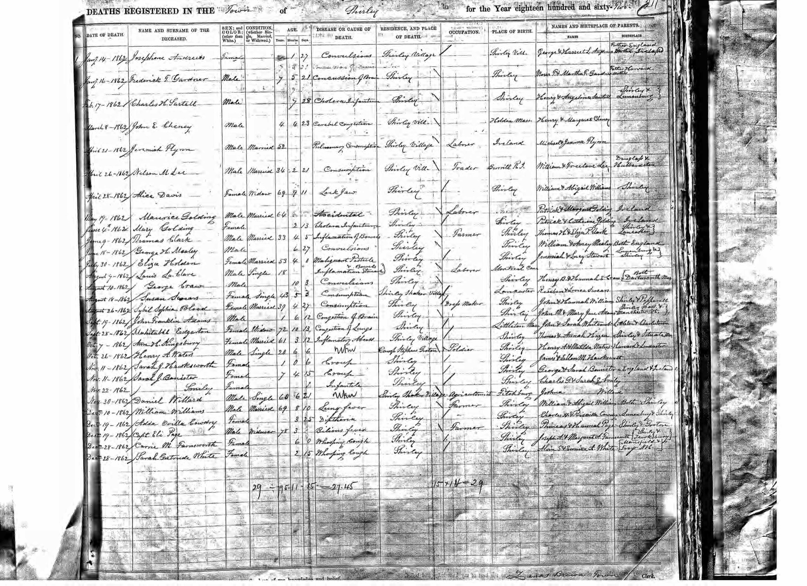
  <figcaption>Shirley, Massachusetts deaths, 1862: "April 21 — Jeremiah Flynn — Married — 52 — Pulmonary Consumption — Shirley Village — Laborer — Ireland — Michael &amp; Joanna Flynn." He died of tuberculosis at fifty-two, a labourer, twelve years after his son got off the boat.</figcaption>
</figure>

<p>The second is that Jeremiah turns out to have had a brother. Searching the Tralee register for every child of a Michael Flynn turns up <strong>Michael, baptized May 28, 1815, also "of Lied"</strong> — same townland, same father, same mother, and <em>the same godmother</em>, an Elizabeth Flynn who also stood at Jeremiah's baptism nine years earlier and was almost certainly Michael senior's sister <span class="badge proven">Proven</span>. A third child, <strong>Patrick, baptized May 2, 1808, "of Leith,"</strong> is very likely theirs too <span class="badge probable">Probable</span>, and a fourth has since turned up in the diocesan index: <strong>Elizabeth, baptized October 24, 1812, "of Lyid"</strong> — father Michael, mother Johanna Crean, named for the aunt who kept standing godmother <span class="badge proven">Proven</span>. The clerk spelled the mother's name three different ways across the three entries — Crean, Lynane, Currane — which is ordinary for these books, and is a large part of why the family took two centuries to find them.</p>

<p>So Michael Flynn and Joanna Crean are no longer two names on a chart. They were a couple at Leath, outside Tralee, baptizing children in 1806, 1808, 1812 and 1815, with the same sister-in-law at the font for the first and the last of them.</p>

<p>They are also where the line stops, and I can now say that with confidence rather than with a shrug. Their own marriage is in no Kerry register. And in <em>every</em> Roman Catholic baptism register in County Kerry before 1800 there are exactly <strong>three</strong> Creans — a Thadeus in 1776, a Sarah in 1790, a Sara in 1800. None of them is Joanna. There is nowhere left to look for her parents. <strong>Michael Flynn and Joanna Crean, born in Kerry in the 1780s, are the top of this family.</strong></p>

<h2>A possible eighth generation — and why I won't claim it</h2>
<p>There is exactly one Michael Flynn baptism in the whole of County Kerry between 1765 and 1792: <strong>Michael Flyn, baptized December 27, 1772 at Tralee, son of Thomas Flyn and Jane Stack</strong>. Right parish. The age fits a man fathering children in 1806 and 1815. Thomas and Jane are a real, documented couple with five children in the register — Michael 1772, Mary 1776, John 1778, Jane 1779, Ellen 1780.</p>

<p>But every one of Thomas's children is recorded at "Tralee," and our family is at Leath. The link rests on a common name, a parish and a plausible age, and nothing else. So: <span class="badge lore">Candidate</span> — and it is here only so the next person doesn't have to find it again. The record that would settle it, Michael's own age at death, does not survive; Kerry's Catholic burial registers essentially don't exist for this period. The Tithe Applotment Books for Ratass might do it, but the Irish National Archives site that holds them has been offline for months.</p>

<h2>What Curraheen actually was</h2>
<p>For a long time "Curraheen, Tralee" was just a place name to me. It isn't any more.</p>

<p>It is a townland of <strong>2,302 acres</strong> in the civil parish of Annagh, a mile and a half east of Blennerville, on land owned by the <strong>Denny family</strong> — the Dennys had held Tralee since the Elizabethan plantation. And it mattered locally for one reason. Samuel Lewis's <em>Topographical Dictionary of Ireland</em>, 1837: <strong>"the chapel is at Curragheen."</strong> The Catholic chapel for the entire parish of Annagh stood <em>in this townland</em>. That is why the Tralee register keeps saying "of Curriheen" — the Flynns were living at the church.</p>

<p>The <strong>1824 tithe applotment list for Curraheen has eleven names on it.</strong> Three of them are this family: a <strong>Flynn</strong>, a <strong>"Breck" Timothy</strong> — Brick — and an <strong>"Allmann"</strong> — Almon. Plus Connors, Higginses and a Looney. Every surname the Curraheen Flynns married into over the next twenty years is already on that one small list. <strong>Jeremiah Flynn and Catherine Brick were neighbours five years before they married.</strong></p>

<p>And the other side of it: in the same 1824 survey, <strong>there is no Flynn at Lyad at all</strong> — eight occupiers, four of them Howards. Michael Flynn, Jeremiah's father, held <em>no rateable land</em>. He was a cottier on somebody else's ground, which is why he leaves almost no trace beyond four baptisms.</p>

<h2>Two hundred and twelve</h2>
<p>Here is the famine, in one line of a printed census abstract.</p>

<blockquote><p><strong>Curraheen, 1841: 292 people in 44 houses.<br>Curraheen, 1851: 212 people in 37 houses.</strong></p></blockquote>

<p>Twenty-seven per cent gone in ten years, and seven houses simply not there any more <span class="badge proven">Proven</span>. And Curraheen got off <em>lightly</em>. Rural Annagh as a whole lost 38 per cent. The neighbouring townland of Ballydunlea went from 182 people to 47 — thirty houses down to eight. Meanwhile the town of Blennerville swelled from 225 people to 625, and the 1851 census counts <strong>362 people in "Auxiliary Workhouses" inside the parish</strong>, women outnumbering men three to one. The countryside did not die quietly. It emptied into the town and into the workhouse, and the parish total barely moved.</p>

<p>The Flynns were among the 80 who left Curraheen. They did not leave because a landlord cleared them — I looked for that and it isn't there. But in 1851 <strong>William Denny</strong>, the landlord, and Nicholas Donovan — a co-owner of the famine ship <em>Jeanie Johnston</em>, which sailed from Blennerville, three miles away — were paying workhouse passages for people off their own estates. And Tralee's own poor law guardians voted <em>against</em> the government's Earl Grey emigration scheme, on the grounds that "the bone and sinew of the country should not be encouraged" to go.</p>

<p>Griffith's Valuation reached Curraheen in about 1852, a year or two after the family sailed, and lists <strong>29 occupiers — including a Denis Flynn, a Denis Flynn junior, a Jeremiah Flynn, and five Almons</strong>. Cousins, still there, still farming, after ours had gone.</p>

<h2>The Bricks next door</h2>
<p>Catherine Brick's own parents are named on her 1892 Massachusetts death record: <strong>Daniel Brick and Honora</strong> <span class="badge proven">Proven</span>. Her baptism is not in the surviving Kerry registers — I checked every Catherine Brick in the county between 1804 and 1816 and none of them is hers — so that single American record is nearly all we get of them. The one thing added since is the <strong>Dermot O'Brick</strong> who stood godfather at Andrew's baptism in 1833: a Brick still at Curraheen, in the same parish, on the same day as the family, thirty years before any of them left <span class="badge proven">Proven</span>.</p>

<p>And then, tonight, that Dermot turned into something bigger. There is exactly <strong>one</strong> Brick baptism at Curraheen in the whole Kerry register:</p>

<blockquote><p>"Baptism of <strong>DERMOT BRICK of CURRIHEEN</strong>, 22 August 1807 — father <strong>Thadeus Brick</strong>, mother <strong>Honora Dillane</strong>."</p></blockquote>

<p>Now put that next to the 1824 tithe list, which has exactly <strong>one</strong> Brick household in the townland: <strong>"Breck, Timothy."</strong> Timothy and Thadeus are the same Irish name — Tadhg — written down by two different clerks. So there is one Brick family at Curraheen, and it is his.</p>

<p>Catherine Brick married Jeremiah Flynn in 1829 and the register calls her <em>"of Curriheen."</em> She was born about 1809. Dermot Brick of Curraheen was born in 1807. And a grown <strong>Dermot O'Brick</strong> stood godfather to her first son in 1833 — which is exactly what a mother's brother does.</p>

<p><strong>So: Catherine's parents were probably Thadeus (Timothy) Brick and Honora Dillane of Curraheen, and Honora's surname was Dillane</strong> <span class="badge probable">Probable</span>. That would be a new name at the very top of this tree.</p>

<p>I am grading it Probable and not Proven, and here is exactly why. <strong>Catherine's Massachusetts death record, in 1892, names her father as <em>Daniel</em>, not Thadeus.</strong> Daniel and Thadeus are genuinely different names. But that record was written eighty-three years after her birth, in another country, from what one of her children could remember about a grandfather he had never met — and there is no Daniel Brick at Curraheen in any Irish record. There is also no marriage of Thadeus Brick and Honora Dillane in any Kerry register, and no baptism for Catherine herself; the Curraheen entries are thin. One record would settle it: the printed page of Griffith's Valuation for Curraheen, which will give the Brick occupier's first name in 1852.</p>

<p>One more thing, small and lovely. In the Tralee register for <strong>1 February 1810</strong>: <em>"Marriage of Dermot Flyn and Julia Brick."</em> These two families were marrying each other <strong>nineteen years before</strong> Jeremiah married Catherine.</p>

<p>What the Irish registers <em>do</em> show is the neighbourhood. There was a Brick family at Curraheen: a Daniel Brick christening a daughter Mary there in <strong>August 1830</strong>, the year after Catherine married Jeremiah in the same townland. The mother's name is different, so that Daniel is almost certainly Catherine's brother rather than her father — a young man starting his own family on the same lane. It explains the 1829 marriage of two people "both of Curriheen" exactly: the Flynns and the Bricks were neighbours.</p>

<p>And Jeremiah was not some lone tenant out on the edge of things. Pulling every Flynn baptism at Curraheen between 1815 and 1840 turns up <strong>eight separate Flynn households</strong> in that one small townland — Edmund and Mary Almon, Cornelius and Ann Connor, Dermot and Catherine Leary, Denis and Margaret Lounie, John and Mary Shea, Michael and Mary Higgins, Andrew and Joanna Almon, and our Jeremiah and Catherine Brick <span class="badge proven">Proven</span>. When Jeremiah moved from Leath to Curraheen he was not striking out. He was moving in with his own.</p>

<h2>The mills</h2>
<p>Andrew came over at about seventeen and went where the work was. On <strong>April 21, 1856</strong>, aged 22, he married in Groton, Massachusetts — and this record corrects something the family had wrong for a long time.</p>

<figure>
  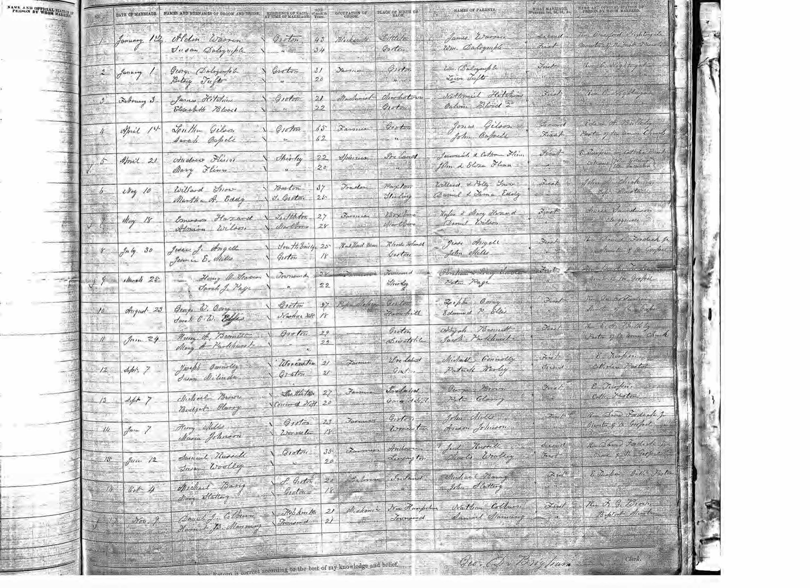
  <figcaption>Groton, Massachusetts marriages, 1856: "April 21 — Andrew Flinn / Mary Flinn — Shirley — 22 / 20 — Spinner — Ireland — Jeremiah &amp; Catherine Flinn / John &amp; Alice Flinn." His parents and hers, on one line.</figcaption>
</figure>

<p>His wife was <strong>Mary Flynn</strong> — not Mary Manning, as Find a Grave and the family tree both have it. Manning was her <em>mother's</em> maiden name. Her parents were <strong>John Flynn and Alice Manning</strong> <span class="badge proven">Proven</span>, named both on this register and again on her 1907 death certificate. Two Flynns out of Ireland marrying each other in a Massachusetts mill town.</p>

<p>His occupation on that page is <strong>spinner</strong>, and that is what he stayed. In 1860 the family is in <strong>Manchester, New Hampshire</strong>, in the Amoskeag mills — Andrew 23, a spinner, with Mary and a baby son John. The census taker also recorded that he could not read or write. They were back in Shirley by 1862, and there Andrew stayed for fifty years, still "works in cotton mill" in 1870, dying in 1911. He never climbed. The immigrant generation ate the cost.</p>

<p>It is worth being concrete about what that cost was. From March 1855 the Amoskeag mills ran <strong>6:15 in the morning to 7 at night, with forty-five minutes for dinner</strong> — twelve hours on the floor, six days a week, no Saturday half-day. And the pay was not the draw: a male cotton operative in 1860 made about <strong>90 cents a day</strong> when a common labourer made <strong>a dollar three</strong>. The mill paid <em>worse</em> than day labour. What it bought you was steadiness, and work for your wife and children too.</p>

<p>And I now think I know why they left. In <strong>1861</strong> the war cut off southern cotton, and the treasurers of the Lowell and Manchester mills shut the machines down and sold off their stored bales, putting thousands of operatives into the street. Jeremiah was born at Manchester in about 1861. Patrick was born back in Shirley in December 1864. <strong>The window is exactly the shutdown.</strong> Andrew did not choose to go home to Shirley; the war closed the mill under him <span class="badge probable">Probable</span>.</p>

<p>The New Hampshire years used to rest on that single census page. They don't any more. When Andrew's son <strong>Jeremiah A. Flynn</strong> married Mary E. Mack at Northbridge in 1889, the clerk wrote his birthplace down as <strong>Manchester, New Hampshire</strong>, and his parents as Andrew Flynn and Mary Flynn <span class="badge proven">Proven</span>. That one line does two jobs: it puts the family in the Amoskeag mills beyond argument, and it is a fourth independent record giving Mary's maiden name as Flynn. The route is now fully documented — <strong>Groton 1856, Shirley 1857, Manchester 1858&ndash;62, Shirley from 1864 on</strong>.</p>

<p>They are all still in St. Mary's Cemetery in Ayer: Andrew, died 1911, his stone reading "Son of Jeremiah Flynn and Catherine (Brick) Flynn"; Catherine Brick, 1809–1892; a Jeremiah Flynn who served in the Civil War with the 2nd Massachusetts Heavy Artillery. And an older shared stone reading "Andrew Flynn 1803–1863 / Jeremiah Flynn 1802–1865." That older Andrew is very likely the grown <strong>Andrew O'Flynn of Curraheen who married Joanna Almon there in 1835</strong> <span class="badge probable">Probable</span> — a relative of Jeremiah's, not the baby Andrew who sailed to America. (Remember the Almon godfather at sister Joanna's baptism; these Curraheen families married and stood godparent for each other constantly.) That reading is now much stronger than "very likely": the Tralee register shows <strong>Andrew O'Flynn and Joanna Almon baptizing a daughter, Mary, at Curraheen on September 16, 1838</strong> — five months after Daniel Almon stood godfather to Jeremiah's daughter, and with Mary Almon as godmother <span class="badge proven">Proven</span>. Two Flynn households in one townland in one year, with the same family standing over both fonts. The "Jeremiah 1802–1865" on that stone is <em>not</em> our Jeremiah, who died in 1862 with a record to prove it.</p>

<p>And there is now a much better reason to believe it. The <strong>1855 Massachusetts state census</strong> catches the entire family under one roof in Shirley — Jeremiah, Catherine, and five children — with one extra person in the household: <strong>an Andrew Flinn, aged 45, born in Ireland</strong>. Not the son, who is listed separately a few lines up. An older Andrew, living in Jeremiah's house. A name on a weathered stone is one thing; a man at your brother's kitchen table in the census is quite another.</p>

<figure>
  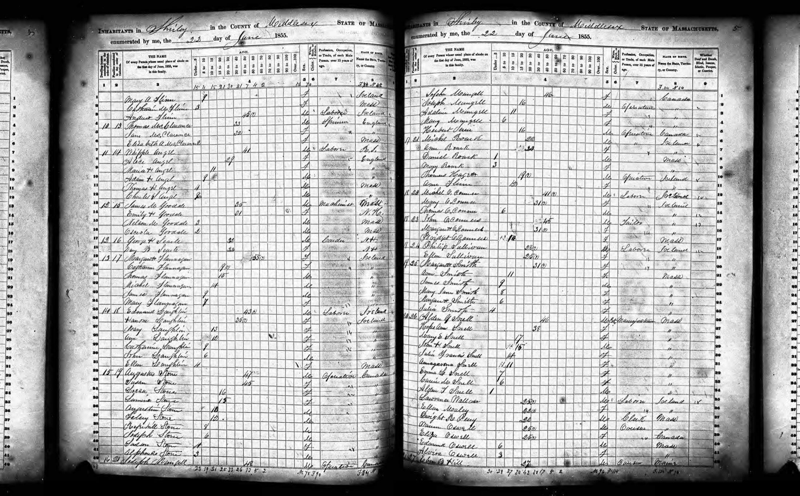
  <figcaption>1855 Massachusetts state census, Shirley, household 14: Jerry Flinn 39, Catharine 35, Andrew 19, Joana 14, Jerry 11, Mary A 9, Catharine M 3 — and Andrew Flinn, 45. The ages run several years light throughout; the enumerator was estimating. This is the family's earliest American record.</figcaption>
</figure>

<figure>
  
  <figcaption>The shared stone at St. Mary's, Ayer: Andrew Flynn 1803-1863 and Jeremiah Flynn 1802-1865, weathered almost past reading.</figcaption>
</figure>
<figure>
  
  <figcaption>Catherine (Brick) Flynn's footstone, "MOTHER 1809-1892." Born in Kerry around 1809, she outlived her husband by thirty years and died at Ayer of chronic gastritis, aged 83.</figcaption>
</figure>

<h2>The ones who stayed</h2>
<p>Andrew and Mary had <strong>eight children</strong> that I can now name, and only one of them got out.</p>

<p><strong>Johanna</strong>, the eldest, born in Shirley on March 27, 1857, eleven months after the wedding. <strong>John H.</strong>, born about 1859. <strong>Jeremiah A.</strong>, born at Manchester about 1861. <strong>Patrick John</strong>, December 23, 1864. <strong>Andrew Henry</strong>, born in Shirley in 1866 — <strong>and dead in Shirley in 1870</strong>, aged about four <span class="badge proven">Proven</span>. They named a son for his father and buried him before he was five. And <strong>Alice Gertrude</strong>, the youngest, born July 23, 1874.</p>

<p>Two of the boys never left the loom. Shirley's printed jury lists have <strong>"Jeremiah H. Flynn — Haskell st — Weaver"</strong> in 1910 and <strong>"John H. Flynn — Main st — Weaver"</strong> in 1915 and 1918; both served as paid town election officers. The immigrant's sons ran the ballot box in the village their father spun cotton in. Meanwhile their brother Patrick was president of a Boston company with an office in the Tremont Building.</p>

<p>Alice kept house for John. The 1900 and 1910 censuses have the two of them in the same Shirley household, brother and sister, into their forties. Then on <strong>March 1, 1919</strong>, aged forty-four, Alice married <strong>Charles Frederic Edgarton</strong> of Concord <span class="badge proven">Proven</span> — and the officiant was <strong>Rev. Loren B. Macdonald</strong>, a Unitarian. A Kerry immigrant's daughter, married out of the Church at middle age, in another town. The Edgartons, incidentally, were the family that had <em>built</em> Shirley's cotton mills. She is the "Mrs. Frederick Edgarton" who turns up as a surviving sister in Patrick's obituary in 1936, unexplained until now. She died on August 23, 1952.</p>

<h2>Two funerals in Shirley</h2>
<p>Neither Andrew nor Mary got a proper obituary. They got two lines apiece in the "SHIRLEY" column of the Fitchburg Sentinel, and those two lines are all that was ever written about either of them.</p>

<blockquote>
<p>"The funeral of <strong>Mrs. Andrew Flynn</strong> was held, Friday at 9 a.m. Burial in Ayer. Beautiful flowers testified to the esteem in which Mrs. Flynn was held by a large circle of friends."<br><span style="font-size:0.9em">— Fitchburg Sentinel, September 14, 1907</span></p>
<p>"The funeral of <strong>Andrew Flynn</strong> will be held at St. Anthony's church, Saturday morning at 9 o'clock. Burial in the family lot at Ayer. Mr. Flynn was 77 years, 21 days."<br><span style="font-size:0.9em">— Fitchburg Sentinel, February 24, 1911</span></p>
</blockquote>

<p>St. Anthony's on Phoenix Street was Shirley's own Catholic church, and it had only existed since <strong>1905</strong>. For the first fifty years the Flynns were in Shirley there was no church in the village at all — a priest came out from Fitchburg, and Mass was said in people's houses and, before that, <em>in the woods</em> near what became the Catholic cemetery. Andrew lived long enough to be buried out of a real church in his own village, by six years.</p>

<h2>The climb</h2>
<p>Andrew's son <strong>Patrick John Flynn</strong> was born in Shirley on <strong>December 23, 1864</strong> <span class="badge proven">Proven</span> — not 1859, which is what the family tree said and what this page said until recently. His birth register entry, his 1892 marriage record, and his baptism at Ayer on <strong>New Year's Day 1865</strong> all agree <span class="badge proven">Proven</span>.</p>

<p>He made the move that changed everything: off the mill floor, into Boston, into business. And I had one thing badly wrong about it. I had been calling S. G. Parker &amp; Co. <em>the family firm</em>. It wasn't. It was <strong>Scripture &amp; Parker</strong> before 1880 and had been making soda water in Boston since about 1860, and <strong>Samuel G. Parker died in January 1899, aged seventy</strong>, with no connection to this family at all. Patrick joined it around <strong>1886, aged twenty-one, as an employee</strong>, and spent fifty years working his way to the top of somebody else's company. That is a better story than the one I had.</p>

<figure>
  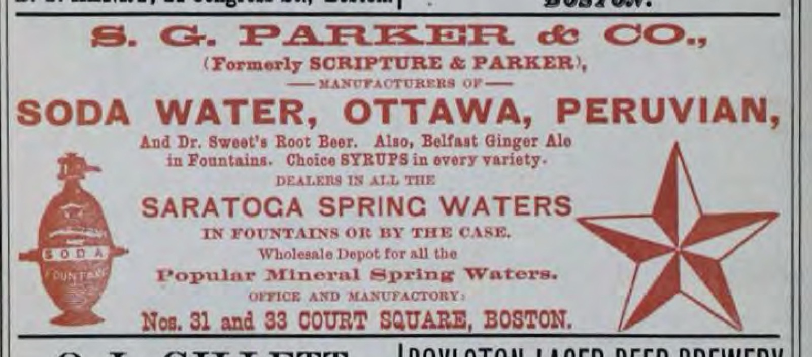
  <figcaption>The company Patrick walked into, four years before he got there. Boston city directory, 1882, printed in red with a star trademark: "S. G. PARKER &amp; CO., (Formerly SCRIPTURE &amp; PARKER), Manufacturers of SODA WATER, OTTAWA, PERUVIAN, and Dr. Sweet's Root Beer. Also, Belfast Ginger Ale in Fountains. Choice SYRUPS in every variety. Dealers in all the SARATOGA SPRING WATERS in fountains or by the case. Office and manufactory: Nos. 31 and 33 Court Square, Boston."</figcaption>
</figure> The record of it is unusually complete, because he turns up in a census or a directory every few years for forty years:</p>

<blockquote>
<p><strong>1892</strong> — bookkeeper, Revere. <strong>1910</strong> — manager, soda water, renting on Mansfield Street in Brighton. <strong>1920</strong> — treasurer, owning a mortgaged house on Westbourne Road in Newton. <strong>1929</strong> — <em>president and treasurer</em>, with an office in the Tremont Building, Boston. <strong>1930</strong> — proprietor and employer; house worth $12,000, a live-in servant, and a radio.</p>
</blockquote>

<p>The firm was the <strong>S. G. Parker Company, soda water manufacturers</strong> (the papers print it as S. D. about half the time). He was with it more than fifty years, and for a stretch he also ran <strong>St. Clair's Restaurant</strong> in Boston. One generation, from an illiterate mill hand to a company president in the suburbs.</p>

<p>It nearly burned down in front of him. On New Year's night, <strong>1921</strong>, gas used in making soft drinks exploded in the plant on the Boston waterfront and took the whole building, street to roof — a four-alarm fire, a quarter of a million dollars, and a tank of alcohol on the third floor that the firemen expected to go at any moment and which burst and spread burning across the floor instead. Two firemen were hurt. The Boston Post quoted the man who put a number on the damage:</p>

<blockquote>
<p>The Parker Company lost machinery said by <strong>General Manager Flynn</strong> to be worth not less than $75,000.</p>
</blockquote>

<p>That is Patrick, at fifty-six, standing in the street on New Year's morning. His son Donald was a Harvard senior at the time.</p>

<p>The Boston Fire Department's own annual report for 1921 puts the plant at <strong>87&ndash;93 Albany Street</strong> and the loss at <strong>$113,136</strong> &mdash; the newspapers' "$200,000 to $250,000" was padded, and Flynn's own $75,000 machinery figure turns out to be two-thirds of the whole adjusted loss. It was one of only <strong>four</strong> fires the Fire Commissioner singled out in the entire year. And here is the thing that tells you who was actually running the company: <strong>twenty-five days after the fire, S. G. Parker &amp; Co. re-incorporated at two and a half times its old capital.</strong> They didn't limp. They raised money and rebuilt bigger.</p>

<p>The other business was <strong>St. Clair's</strong>, and I had that wrong too &mdash; I thought he closed it in 1929. He <em>sold</em> it. The <strong>Waldorf System bought St. Clairs', Inc. in 1929</strong>, catalogued as "Massachusetts table service restaurants," so it was a proper sit-down chain, not a lunch counter. He got out months before the Crash. St. Clair's outlived him by forty years: the 1969 Boston directory still lists a St. Clair's Coffee Shop at 180 Tremont, a restaurant at 92 Summer Street, and a bakery at 443 Boylston.</p>

<h2>The Whites</h2>
<p>In <strong>1892</strong> Patrick married <strong>Mary Gertrude White</strong>, born in Charlestown on <strong>March 29, 1870</strong> <span class="badge proven">Proven</span> — the "White" that every Donald in this family has carried since.</p>

<figure>
  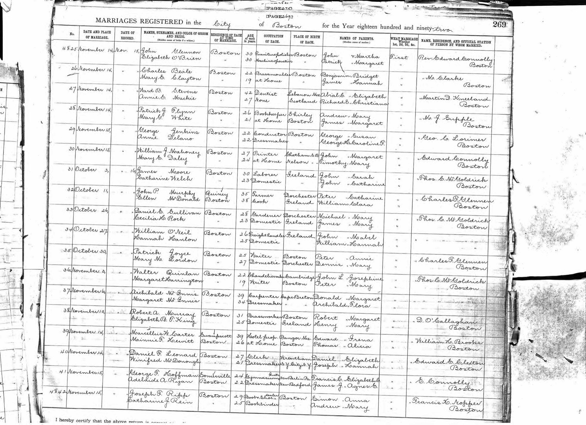
  <figcaption>Boston marriages, 1892: "November 14 — Patrick J. Flynn / Mary G. White — Boston — 26 / 21 — Bookkeeper / at home — Shirley / Boston — Andrew &amp; Mary / James &amp; Margaret."</figcaption>
</figure>

<p>Her line opens up a whole second Irish family that nobody in mine knew about. Her parents, <strong>James White and Margaret Riley</strong>, married in Charlestown on <strong>September 26, 1852</strong>. He was 22 and <strong>born in Ireland</strong>; his parents were <strong>Edmund White and Ellen</strong>. She was about 19 and <strong>born in Massachusetts</strong>; her parents were <strong>Patrick Riley and Ann</strong> <span class="badge proven">Proven</span>.</p>

<p>So the Whites are Irish too — and the Rileys were already in Massachusetts by about 1833, a decade before the famine, which makes Margaret the first American-born person anywhere on this line. By 1880 the family is at 36 Everett Street in Charlestown: James 48, Margaret 47, and four children still at home. Gertrude, aged 10, is the youngest of six. The eldest daughter is called <strong>Mildred</strong> — worth remembering, because Gertrude's son would marry one.</p>

<p>Everett Street ran from 157 Bunker Hill Street to 198 Medford Street; it was laid out in 1837 and accepted by the town in 1841. <strong>It does not exist any more.</strong> In 1940 the Boston Housing Authority took the whole block for the Bunker Hill housing project — forty-two buildings, eleven hundred units — and the street was erased. A playground sits roughly where the Whites' front door was. But on the <strong>1875 Hopkins atlas</strong> the lot at 36–38 Everett Street is marked <strong>"M. White"</strong>, and there are two more Whites, "David" and "E. White," a few doors down at 12–14. If "E. White" is Edmund — James's father — then three generations of this family were living on one short Charlestown street.</p>

<h2>Julia, who was called Gertrude</h2>
<p>And then there is her baptism, which I found on the last night of all this and which I did not expect.</p>

<p>The Whites' parish was <strong>St. Francis de Sales</strong>, at the top of Bunker Hill Street, which opened in June 1861. Gertrude was born on March 29, 1870 and carried up there five days later. The priest wrote her into the register as <strong>"Juliam G. White"</strong> — Julia — daughter of <em>Jacobo</em> White and <em>Margarita E. Riley</em> <span class="badge proven">Proven</span>. The Boston town clerk, working from the same birth, wrote <strong>Mary G. White</strong>. She married in 1892 as <strong>Mary Gertrude</strong>. Her family called her <strong>Gertrude</strong>. Four names, one woman, and not one of them is the one the Church has.</p>

<p>Twenty-eight years later a priest at Revere would write her son into a register as <strong>Patricius</strong> while the clerk wrote <strong>Donald White Flynn</strong>. Mother and son, the same split, a generation apart. That is what happens when the priest writes a saint's name in Latin and the clerk writes whatever the parents actually say at the door.</p>

<p>Two of her brothers and sisters are in the same register: <strong>James, born January 19, 1863</strong>, and <strong>Anna Elizabeth, born November 26, 1865</strong>, both baptized at Charlestown within a week of birth <span class="badge proven">Proven</span>. The older children — Mildred, Edward, Ellen — were born before St. Francis de Sales existed, so they belong to <strong>St. Mary's, Charlestown</strong>, which is where James and Margaret had married in 1852.</p>

<p>Patrick and Gertrude had three children in ten years, and the Catholic sacramental registers show that <em>each one was born in a different town</em> <span class="badge proven">Proven</span>. <strong>Alice Gertrude</strong>, the first, was baptized at <strong>Charlestown</strong> in August 1893 — Gertrude's own family's town, which means she went home to her mother to have her. <strong>Donald</strong> came in 1898 at <strong>Revere</strong>, where Patrick was keeping books. <strong>Margaret Manning</strong> was born on <strong>September 28, 1903 at Ayer</strong> — Patrick's home town, the mill village he had climbed out of. (The state index says Boston and September 8th. The parish register says otherwise, twice.)</p>

<p>Charlestown, Revere, Ayer. That is not a family with a house. That is a young couple with no money and two sets of parents, going wherever there was a spare bed.</p>

<h2>Donald White Flynn</h2>
<p>Patrick's son <strong>Donald White Flynn</strong> was born on Nahant Avenue, Revere, on <strong>January 18, 1898</strong>, when his father was still a bookkeeper. He was the payoff generation. And we now have his face.</p>

<p>He was not christened Donald. Nineteen days after he was born, the priest at Revere entered him in the parish register as <strong>"Patricius"</strong> — Patrick, for his father — while the town clerk, working from the same birth and the same parents, wrote down <strong>Donald White Flynn</strong> <span class="badge proven">Proven</span>. The church name and the civil name never matched. Four generations of Donald White Flynns, including me, descend from a boy the Church called Patrick.</p>

<figure>
  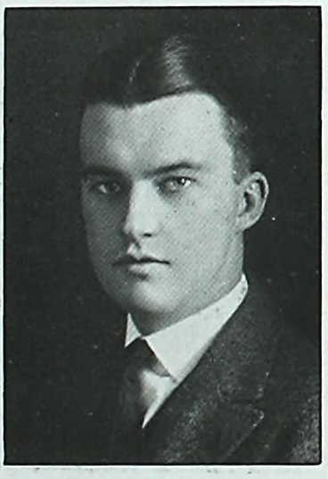
  <figcaption>Donald White Flynn, aged 22. <em>Harvard Nineteen Twenty Class Album</em>, page 180 — the first photograph of anyone on this line that the family has ever seen. <a href="documents/flynn-harvard-1920-page.jpg">Full page here.</a></figcaption>
</figure>

<p>His entry underneath it is the closest thing to his own voice that survives:</p>

<blockquote>
<p>Born January 16, 1898, at Revere, Massachusetts. Home address, 28 Westbourne Road, Newton Center, Massachusetts. Prepared at <strong>Boston Latin School</strong>. In college three years as undergraduate. <strong>University Lacrosse Squad, 1919–1920. Kappa Sigma Fraternity, Catholic Club.</strong></p>
<p>Electrician (Radio), Third, Second, and First Class, <strong>Naval Reserve</strong>, January, 1918, to April, 1919; overseas, July 1, 1918, to March 15, 1919.</p>
</blockquote>

<p>Boston Latin, then Harvard. He played lacrosse. He was in a fraternity and the Catholic Club — which in the Harvard of 1920 tells you something on its own. "In college three years" because the war took the fourth, and he graduated with the war class of 1920. (The album gives his birthday as January 16; the Revere register says the 18th. He presumably supplied the date himself, so take your pick — I trust the register.)</p>

<p>The war service has been misremembered as Army. It wasn't. He enlisted in the <strong>U.S. Naval Reserve Force</strong> in January 1918, trained at the Naval Radio School that Harvard hosted in Cambridge, and shipped out as a <strong>wireless operator on the USS <em>Lake Blanchester</em></strong>, overseas from July 1918 to March 1919, promoted electrician third class to first class along the way. He was twenty, crossing the Atlantic, working a radio.</p>

<p>On <strong>October 15, 1925</strong> he married <strong>Mildred Louise Dorrety</strong> at Sacred Heart Church, Newton Centre.</p>

<figure>
  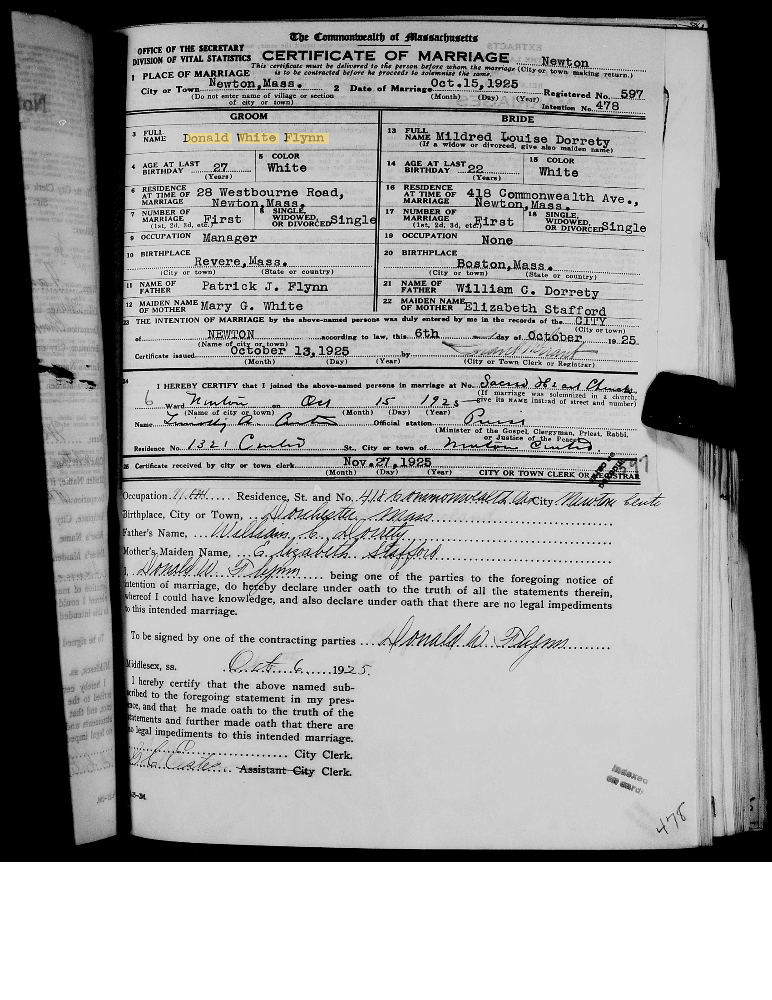
  <figcaption>Commonwealth of Massachusetts certificate of marriage, Newton, registered no. 597. Groom: Donald White Flynn, 27, of 28 Westbourne Road, occupation Manager, born Revere; parents Patrick J. Flynn and Mary G. White. Bride: Mildred Louise Dorrety, 22, of 418 Commonwealth Avenue, born Boston; parents William C. Dorrety and Elizabeth Stafford. <a href="documents/flynn-1925-marriage-cert.pdf">Full certificate (PDF).</a></figcaption>
</figure>

<p>Look at the two addresses. <strong>28 Westbourne Road and 418 Commonwealth Avenue</strong> — the Flynns and the Dorretys were living in the same Newton ward, a few minutes' walk apart, and in 1920 the census taker recorded both households in the same enumeration district. He was 21 and she was 16 when they were neighbours. That is how they met.</p>

<p>Mildred was the daughter of <strong>William Cornelius Dorrety</strong>, a Boston jeweller who ran Dorrety Brothers, and <strong>Elizabeth G. Stafford</strong>. She had spent some years in <strong>Tucson, Arizona</strong> before the wedding — a Boston paper called her "a former resident of Tucson" in 1931, and she appears in no Massachusetts school yearbook of the period, which fits a girl who was away. In that era, for a family with money, Arizona usually meant lungs.</p>

<p>Their two boys were <strong>David Stafford Flynn</strong> (1927) and my grandfather <strong>Donald White Flynn Jr.</strong> (1930) — each given a grandmother's maiden name as a middle name, Stafford and White.</p>

<figure>
  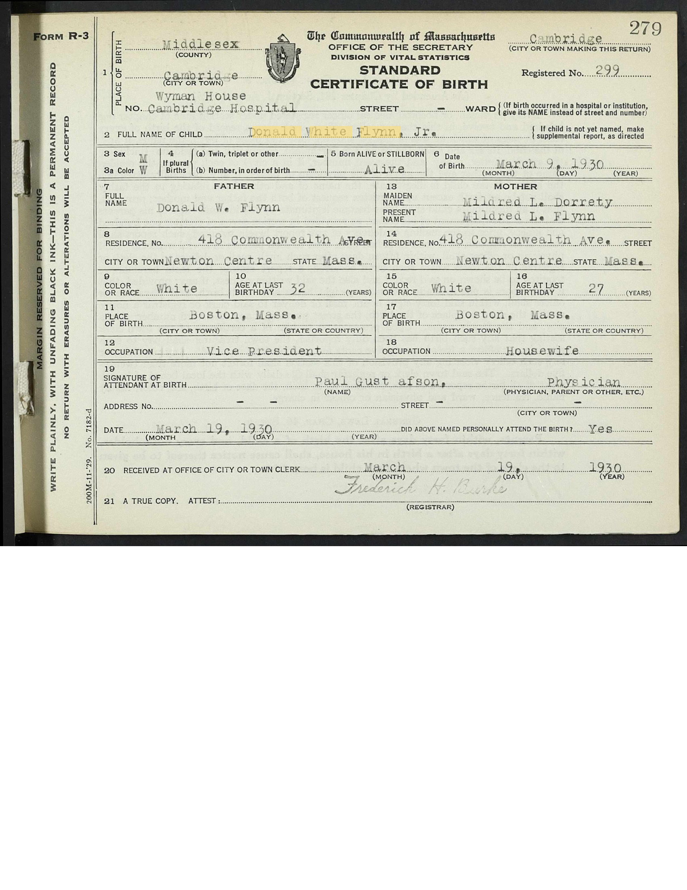
  <figcaption>Donald White Flynn Jr., born at <strong>Wyman House, Cambridge Hospital</strong>, March 9, 1930. Father: Donald W. Flynn, 32, of 418 Commonwealth Avenue, occupation <strong>Vice President</strong>. Mother: Mildred L. Dorrety, 27, housewife. <a href="documents/flynn-1930-birth-cert.pdf">Full certificate (PDF).</a></figcaption>
</figure>

<p>By the time that certificate was written he was vice president of the company his father ran, and the two of them were running it together.</p>

<h2>One week in October 1931</h2>
<p>Then it stops. The Boston Evening Globe carried it the same day, and the Newton Graphic reprinted it two days later:</p>

<blockquote>
<p>Donald W. Flynn, 32, of 100 Brackett road, vice president of the S. D. Parker Company, soda water manufacturers, died Wednesday in the Boston City Hospital. He had been sick only three days.</p>
<p>Surviving are his wife, the former Mildred Doherty; two sons, David, 4, and Donald Jr., 2; his father and mother, Mr. and Mrs. P. J. Flynn, and two sisters, Alice and Margaret Flynn.</p>
</blockquote>

<figure>
  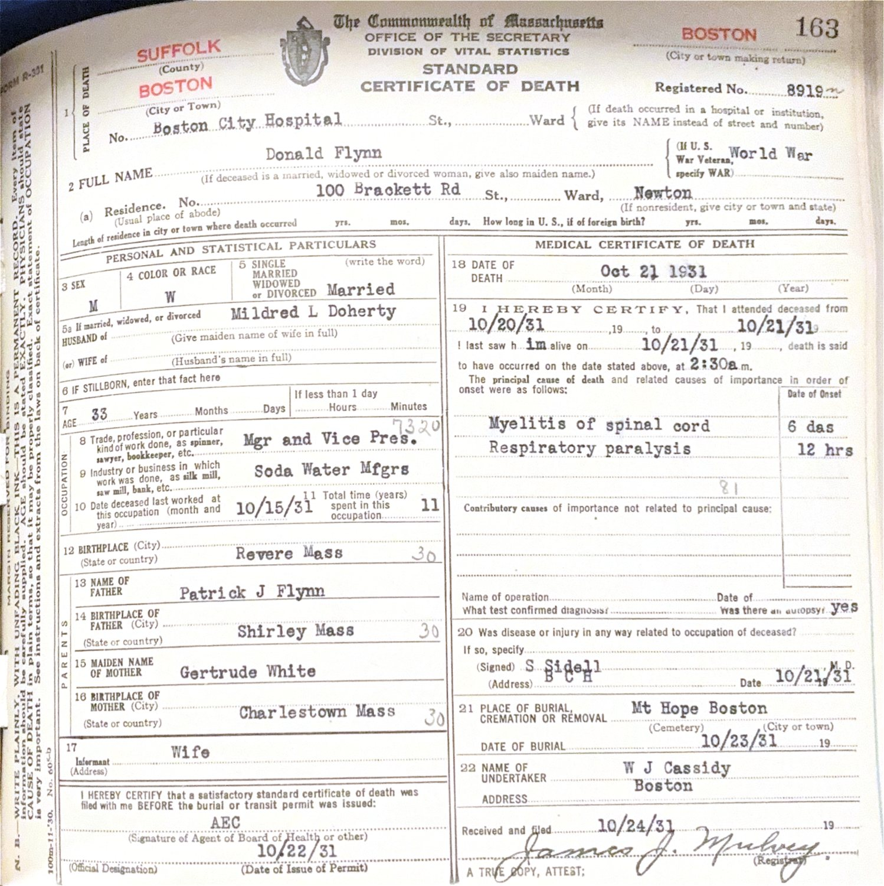
  <figcaption>The death certificate, registered no. 8919. Cause of death, right-hand column: "Myelitis of spinal cord," 6 days, and "Respiratory paralysis," 12 hours.</figcaption>
</figure>

<p>He died at half past two in the morning on <strong>October 21, 1931</strong>, at Boston City Hospital, of <strong>myelitis of the spinal cord</strong>, onset six days, which climbed into <strong>respiratory paralysis</strong> in the final twelve hours <span class="badge proven">Proven</span>. In plain terms: the spinal cord itself became inflamed, fast, until it shut down the muscles he needed to breathe. There was an autopsy.</p>

<p>The certificate says "myelitis," not "poliomyelitis," and that stops me from calling it outright. But a healthy thirty-three-year-old collapsing in under a week from sudden spinal-cord inflammation into fatal breathing paralysis, in 1931, is the classic signature of <strong>polio</strong> — epidemic in exactly those years, and it kills in exactly this way. Family memory held only that it was "some neurological thing." Family memory was right. He is buried at <strong>Mount Hope Cemetery</strong> in Boston.</p>

<h2>What was left</h2>
<p>The rest came apart quickly. <strong>Gertrude died on June 23, 1932</strong>, at home on Westbourne Road, eight months after her son. <strong>Patrick died on February 22, 1936</strong>, also at home, "after a long illness" — and not in Tallahassee, Florida, which a stray index had claimed and which this page repeated for a while. Three Boston papers put him in Newton Centre. Thirty employees of St. Clair's and ten Parker men came to the funeral at Sacred Heart.</p>

<p>In five years the top of the family was gone. The company went on without a single Flynn in it — it was still operating in 1939.</p>

<p>What caught my grandfather and his brother was not the Flynns. It was Mildred's father. Widowed at twenty-eight with two small boys, she moved into <strong>418 Commonwealth Avenue</strong> and stayed; the 1940 census finds the household as William Dorrety, 67, his second wife Florence, his sister Mary, Mildred (widowed, no occupation, "income from other sources"), and the two boys, 12 and 10. My grandfather grew up in that house from the age of five to twenty. The Flynn name carried on; the actual support came from the other side. Mildred lived until <strong>July 3, 1968</strong> and is buried at Lake Grove Cemetery in Holliston.</p>

<p>Two more faces survive from that generation, both of them Donald's sisters — the only people in Patrick's family ever photographed.</p>

<figure>
  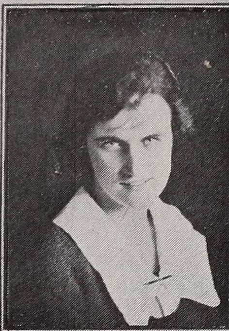
  <figcaption>Margaret Manning Flynn, aged 17 — Newton High School, 1921. Named for her great-grandmother Alice Manning.</figcaption>
</figure>

<figure>
  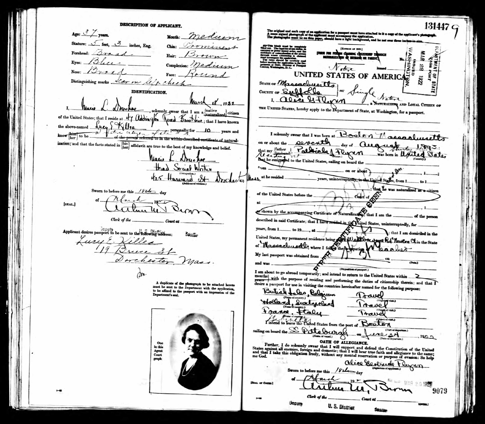
  <figcaption>Alice Gertrude Flynn's passport application, March 1922, with her photograph attached at lower left. Aged 28, five foot three, brown hair, blue eyes, a scar on her left cheek; sailing from Boston on the S.S. <em>Pittsburgh</em> that June for the British Isles, Belgium, Holland, Switzerland, France and Italy. Her father Patrick swore to her citizenship on the form.</figcaption>
</figure>

<h2>My grandfather</h2>
<p><strong>Donald White Flynn Jr.</strong> was two years old when his father died. Here he is at eighteen.</p>

<figure>
  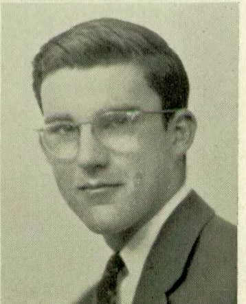
  <figcaption>Donald White Flynn Jr., 1948, from <em>The Newtonian</em>, Newton High School. <a href="documents/flynn-newtonian-1948-page.jpg">Full page here.</a></figcaption>
</figure>

<p>His yearbook entry: <em>"Don; II; Weeks; College; Literary Magazine, 2; Varsity Football Manager, 3; Intermediate Football Manager, 2; Junior Varsity Manager, 1; Legislature, 3."</em> He went by <strong>Don</strong>, wrote for the literary magazine, sat in the student legislature, and managed the football team three years running, working up from junior varsity to varsity manager as a senior. Address: 418 Commonwealth Avenue — his grandfather's house.</p>

<p>He registered for the draft in September 1948 — six feet, 170 pounds, black hair, hazel eyes — as a student at <strong>St. Michael's College</strong> in Winooski Park, Vermont. He graduated in <strong>1952</strong>, and the college yearbook has him.</p>

<figure>
  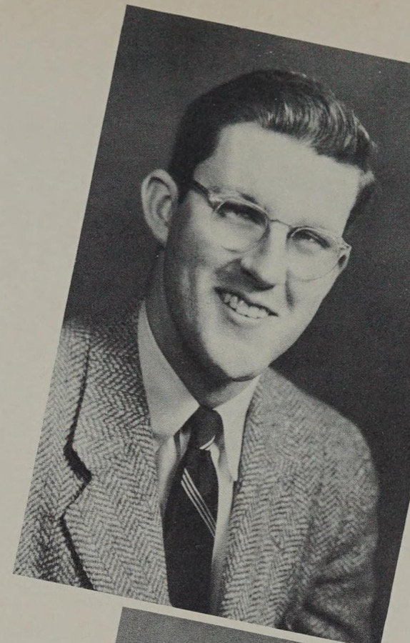
  <figcaption>Donald White Flynn Jr. at twenty-two — <em>The Shield</em>, St. Michael's College, Winooski Park, Vermont, 1952, page 51. Herringbone tweed, striped tie, wire glasses, grinning. <a href="documents/flynn-shield-1952-page.jpg">Full page here.</a></figcaption>
</figure>

<p>His entry gives his home as <strong>Newton Centre</strong> and his major as <strong>sociology</strong>, and then it says this:</p>

<blockquote><p>"Sleet, snow or rain never kept Don from his regular safari to Colby Jr."</p></blockquote>

<p><strong>Joan MacColl went to Colby Junior College.</strong> That is how my grandparents met, written down by his classmates in 1952 and confirmed from her side sixty years later in her own obituary. Winooski Park to New London, New Hampshire is about a hundred and thirty miles each way, in a Vermont winter, and he kept doing it. They married the June after he graduated.</p>

<p>Then the army. <strong>He served in the Korean War</strong> <span class="badge proven">Proven</span> — his obituary says so plainly, which finally explains why my father, <strong>Donald White Flynn III</strong>, was born at <strong>El Paso, Texas, on June 23, 1955</strong>: Fort Bliss. He married <strong>Joan MacColl</strong> at Osterville on Cape Cod on <strong>June 26, 1953</strong>, and took her to Texas.</p>

<p>Before the army there was a stretch of graduate work at <strong>Boston University</strong> and a spell as a <strong>student teacher at Lexington High School</strong> — he was going to be a teacher, briefly. Then two years in the Army, and Texas.</p>

<p>Home to Rhode Island in 1955, and a whole career I had none of a day ago. He joined the <strong>cash department of the Rhode Island Hospital Trust National Bank</strong> that year. In <strong>1958</strong>, at twenty-eight, he was elected <strong>assistant secretary</strong> and made <strong>manager of the East Greenwich branch</strong>; the local paper ran his picture. He managed the bank's Midland Mall office in 1967–68 and finished as an <strong>assistant vice president</strong>.</p>

<figure>
  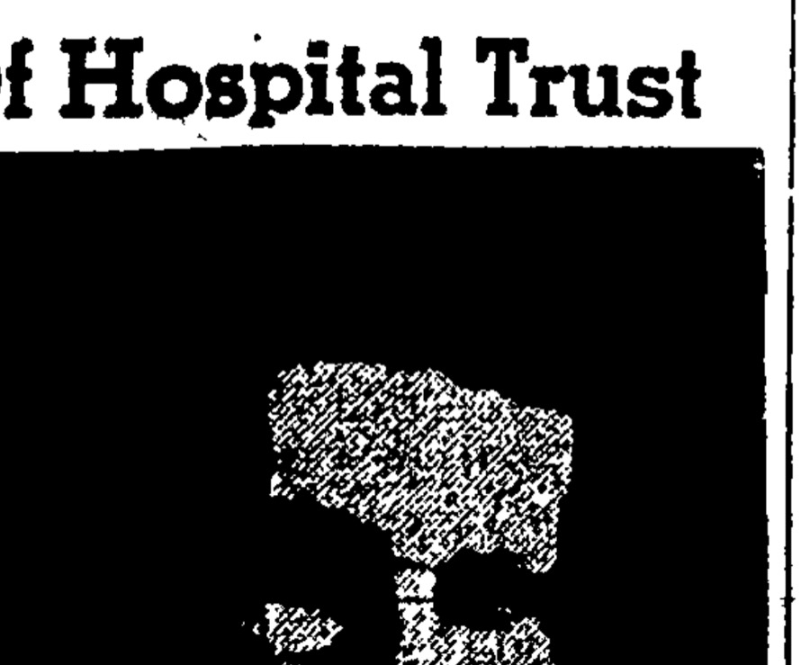
  <figcaption>The Rhode Island Pendulum, April 10, 1958, page one: "Flynn named officer, Hospital Trust." Aged twenty-eight, running a branch.</figcaption>
</figure>

<p>And he did not just work. The obituary lists it all: past officer of the <strong>East Greenwich Chamber of Commerce</strong>; past director and co-chairman of the <strong>East Greenwich Citizens Scholarship Foundation</strong>; the board of the <strong>Kent County Visiting Nurses' Association</strong>; the <strong>town financial committee</strong>; the World Trade Club and the natural resources committee of the Greater Providence Chamber of Commerce; the parish council and finance committee at Our Lady of Mercy; the Knights of Columbus; the East Greenwich Yacht Club; the Lions; the Warwick Fraternal Order of Police. He also did <strong>graduate work at Boston University</strong> somewhere in there.</p>

<h2>Why the Blind Association</h2>
<p>For years the one detail nobody could explain was the line in his death notice asking for memorial gifts to the <strong>Rhode Island Association for the Blind</strong>. Here is the answer: <strong>he was its president</strong> <span class="badge proven">Proven</span>. Had been since <strong>1968</strong> — five years — and was also a director of the National Accreditation Council for Agencies Serving the Blind and Handicapped. It was not a gesture. It was the thing he gave his evenings to.</p>

<h2>January 1973</h2>
<p>And I know what happened now, or as near as the record gets. The <strong>Rhode Island Pendulum</strong> — East Greenwich's own weekly, not the Providence paper I had been chasing for months — ran him on page six under a two-line headline and a photograph.</p>

<figure>
  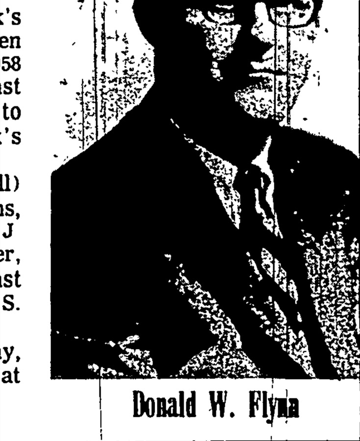
  <figcaption>Donald White Flynn Jr., about forty. The Rhode Island Pendulum, January 17, 1973. <a href="documents/flynn-1973-pendulum-obit.jpg">The whole obituary here.</a></figcaption>
</figure>

<blockquote>
<p><strong>RIAB pres., former bank mgr.</strong><br><strong>Donald Flynn dies at 42</strong></p>
<p>"Donald W Flynn, 42, of 224 Cindyann Drive, East Greenwich, an assistant vice president of Rhode Island Hospital Trust National Bank, and president of the Rhode Island Association for the Blind (RIAB) died Monday, Jan 9, in Kent County Memorial Hospital, <strong>after an illness of several days</strong>."</p>
</blockquote>

<p><em>An illness of several days.</em> That is the sentence. Not a long decline, not something he and my grandmother had been living with — something that came on and took him inside a week. He was forty-two. He had three children at home: my father, my uncle <strong>J. Matthew Flynn</strong>, and my aunt <strong>Deirdre</strong>.</p>

<p>My uncle <strong>J. Matthew Flynn</strong> was born at Warwick on March 22, 1961 and died at Newton on February 9, 1993, aged thirty-one. My grandmother <strong>Joan</strong> remarried in 1980 and died on June 29, 2013. All three of them — Donald, John Matthew, Joan — are in the same lot at Glenwood, Section N, Lot 47.</p>

<p>Three sources give three different dates for the day he died — the Social Security index says January 7, the Boston Globe says the 8th, the Pendulum says "Monday, Jan 9" (and the Monday that week was the 8th). Only the Rhode Island death certificate will settle it, and settle the cause. That is now the one document I most want.</p>

<h2>Four Donalds</h2>
<p>Two men dead young, one after the other, is why almost nothing about the earlier Flynns survived in family memory. Nobody was left to do the telling. But the name went the whole way, and now it's all on paper:</p>

<blockquote>
<p><strong>Donald White Flynn</strong>, born Revere, 1898 — died Boston, 1931.<br>
<strong>Donald White Flynn Jr.</strong>, born Cambridge, 1930 — died Warwick, Rhode Island, 1973.<br>
<strong>Donald White Flynn III</strong>, born El Paso, 1955.<br>
<strong>Donald White Flynn IV</strong>, born San Antonio, 1989. That's me.</p>
</blockquote>

<p>And behind them: Patrick the company president, Andrew the illiterate mill spinner, Jeremiah the labourer who died of consumption, and Michael and Joanna at Leath outside Tralee in the 1780s. Eight generations, and every one of them on a record.</p>

<h2>The paper trail</h2>
<ul class="docs">
  <li><a href="https://www.irishgenealogy.ie/view/?record_id=f67e8588e4-31589">1829 marriage, Tralee: Dermot O'Flynn and Catherine O'Brick of Curriheen</a><span class="doc-what">Confirmed against the actual register scan above. Witnesses Patrick O'Flynn and Michael O'Crean. This is what corrects the old "Cambridge 1841" error.</span></li>
  <li><a href="https://www.irishgenealogy.ie/view/?record_id=95c501c4bd-7728">1833 baptism, Tralee: Andrew, son of Dermot O'Flynn and Catherine O'Brick, Curraheen</a><span class="doc-what">The immigrant's own baptism, January 21, 1833. Parents match his 1911 Massachusetts death record exactly.</span></li>
  <li><a href="https://www.irishgenealogy.ie/view/?record_id=68d5d71735-50719">1806 baptism, Tralee: Dermot, son of Michael Flynn and Johanna Crean, of Lied</a><span class="doc-what">Jeremiah's own baptism.</span></li>
  <li><a href="https://www.irishgenealogy.ie/view/?record_id=68d5d71735-54242">1815 baptism, Tralee: Michael, son of Michael Flynn and Johanna Currane, of Lied</a><span class="doc-what">Jeremiah's younger brother — same townland, same parents, same godmother. This is the record that turned Michael and Joanna from probable into proven.</span></li>
  <li><a href="https://www.irishgenealogy.ie/view/?record_id=68d5d71735-43169">1772 baptism, Tralee: Michael, son of Thomas Flyn and Jane Stack</a><span class="doc-what">The only Michael Flynn baptized in Kerry in that whole window. Possibly our Michael; possibly not. Candidate only.</span></li>
  <li><a href="https://www.irishgenealogy.ie/view/?record_id=95c501c4bd-11021">1838 baptism, Tralee: Joanna, daughter of Jeremiah O'Flynn and Catherine Brick, Curriheen</a><span class="doc-what">Andrew's sister. Godfather Daniel Almon, the Almon–Flynn tie that runs through the neighbourhood.</span></li>
  <li><a href="https://www.irishgenealogy.ie/view/?record_id=f67e8588e4-32470">1835 marriage, Tralee: Andrew O'Flynn and Joanna Almon, both of Curraheen</a><span class="doc-what">The grown Andrew of Curraheen, the probable "Andrew Flynn 1803-1863" on the Ayer stone.</span></li>
  <li><a href="https://www.irishgenealogy.ie/view/?record_id=95c501c4bd-6297">1830 baptism, Tralee: Mary, daughter of Daniel O'Brick, of Curraheen</a><span class="doc-what">The Bricks on the same lane, the year after Catherine's wedding. Almost certainly her brother.</span></li>
  <li><a href="http://www.failteromhat.com/griffiths/kerry/annagh.php">Griffith's Valuation, 1852, Annagh parish</a><span class="doc-what">Lists Jeremiah Flynn holding land at Curraheen, right where the church records put the family.</span></li>
  <li><a href="documents/flynn-1855-state-census.jpg">1855 Massachusetts state census, Shirley, household 14</a><span class="doc-what">The family's earliest American record: Jeremiah, Catherine and five children — plus a 45-year-old Andrew Flinn living with them, almost certainly the elder Andrew of the Ayer stone.</span></li>
  <li><a href="documents/flynn-1865-state-census.jpg">1865 Massachusetts state census, Shirley, household 88</a><span class="doc-what">Catherine, 52 and widowed, with Johanna, Jeremiah, Mary and Catherine. The birthplace column is what proves the family emigrated together: Ireland, Ireland, Ireland — then Massachusetts.</span></li>
  <li><a href="documents/flynn-1862-jeremiah-death.jpg">Jeremiah Flynn, Massachusetts death register, Shirley, April 21, 1862</a><span class="doc-what">Age 52, labourer, pulmonary consumption, born Ireland — parents Michael and Joanna Flynn.</span></li>
  <li><a href="documents/flynn-1856-groton-marriage.jpg">Andrew Flynn and Mary Flynn, marriage register, Groton, April 21, 1856</a><span class="doc-what">Both of Shirley, both born Ireland, he a spinner. Her parents John Flynn and Alice Manning — which is what corrects the "Mary Manning" error.</span></li>
  <li><a href="https://www.familysearch.org/ark:/61903/1:1:M9T6-CT6">Andrew Flynn, 1900 census, Shirley, Mass.</a><span class="doc-what">Born Ireland, arrival year 1850. The famine boat, in a census column.</span></li>
  <li><a href="https://www.findagrave.com/memorial/158295018/andrew-flynn">Andrew Flynn's grave, St. Mary's Cemetery, Ayer</a><span class="doc-what">"Son of Jeremiah Flynn and Catherine (Brick) Flynn." The Irish parents, carved in stone.</span></li>
  <li><a href="https://www.findagrave.com/memorial/107025107/catharine-flynn">Catherine (Brick) Flynn, 1809-1892</a><span class="doc-what">My 4th-great-grandmother, the Kerry clue.</span></li>
  <li><a href="documents/flynn-1892-white-marriage.jpg">Patrick J. Flynn and Mary G. White, marriage register, Boston, November 14, 1892</a><span class="doc-what">His parents Andrew and Mary; hers James and Margaret. The start of the White line.</span></li>
  <li><a href="documents/flynn-1921-fire-boston-post.pdf">Boston Post, January 2, 1921 — the Parker plant fire</a><span class="doc-what">"The Parker Company lost machinery said by General Manager Flynn to be worth not less than $75,000."</span></li>
  <li><a href="documents/flynn-harvard-1920-page.jpg">Harvard Nineteen Twenty Class Album, page 180</a><span class="doc-what">Donald White Flynn's photograph and entry: Boston Latin, lacrosse, Kappa Sigma, Catholic Club, Naval Reserve.</span></li>
  <li><a href="documents/flynn-1925-marriage-cert.pdf">Marriage certificate, Newton, October 15, 1925</a><span class="doc-what">Donald White Flynn and Mildred Louise Dorrety, married at Sacred Heart. Both addresses, both sets of parents.</span></li>
  <li><a href="documents/flynn-1930-birth-cert.pdf">Birth certificate, Cambridge, March 9, 1930</a><span class="doc-what">Donald White Flynn Jr., born at Wyman House, Cambridge Hospital. Father's occupation: Vice President.</span></li>
  <li><a href="documents/flynn-1931-obit.jpg">Newton Graphic, October 23, 1931, full page</a><span class="doc-what">The obituary, in place on page eight, between the Halloween ice cream ad and the legal notices.</span></li>
  <li><a href="documents/flynn-1931-death-cert.jpg">Donald Flynn Sr., Massachusetts death certificate, 1931</a><span class="doc-what">Registered no. 8919. Myelitis of the spinal cord into respiratory paralysis; World War veteran; buried Mt. Hope, Boston.</span></li>
  <li><a href="documents/flynn-1932-gertrude-death-notice.pdf">Boston Evening Globe, June 24, 1932 — Gertrude's death notice</a><span class="doc-what">"In Newton Centre, June 23, Gertrude M. White, beloved wife of Patrick J. Flynn." Eight months after her son.</span></li>
  <li><a href="documents/flynn-1936-patrick-funeral.pdf">Boston Evening Globe, February 25, 1936 — Patrick's funeral</a><span class="doc-what">Rites at Newton. Kills the "died in Tallahassee" story for good.</span></li>
  <li><a href="documents/flynn-1968-mildred-death-notice.pdf">Boston Globe, July 5, 1968 — Mildred's death notice</a><span class="doc-what">Died at Holliston, July 3, 1968; sons David of Mansfield and Donald of East Greenwich, R.I.</span></li>
  <li><a href="documents/flynn-1973-donald-jr-death-notice.pdf">Boston Globe, January 10, 1973 — my grandfather's death notice</a><span class="doc-what">Aged 42. The Providence Journal version, which would give the cause, is still not in hand.</span></li>
  <li><a href="https://www.irishgenealogy.ie/view?record_id=68d5d71735-50719">Baptism of Dermot Flynn, Tralee, February 4, 1806 (KY-RC-BA-450719)</a><span class="doc-what">Father Michael Flynn, mother Johanna Crean, of Lied. Godparents Francis Fitzmaurice and Elizabeth Flynn. Book 2, page 9, entry 135.</span></li>
  <li><a href="https://www.irishgenealogy.ie/view?record_id=68d5d71735-53219">Baptism of Elizabeth Flinn, Tralee, October 24, 1812 (KY-RC-BA-453219)</a><span class="doc-what">Same parents, same townland. The fourth child of Michael and Joanna, and the one named for the godmother.</span></li>
  <li><a href="https://www.irishgenealogy.ie/view?record_id=95c501c4bd-7728">Baptism of Andrew O'Flynn, Curraheen, January 21, 1833 (KY-RC-BA-463178)</a><span class="doc-what">The immigrant's own baptism, with godparents Dermot O'Brick and Mary O'Flynn. Book 4, page 4, entry 8.</span></li>
  <li><a href="https://www.irishgenealogy.ie/view?record_id=95c501c4bd-11021">Baptism of Joanna O'Flynn, Curriheen, April 23, 1838 (KY-RC-BA-466471)</a><span class="doc-what">Andrew's sister. Godparents Daniel Almon and Bridget O'Flynn — the Almon link to the older Andrew's household.</span></li>
</ul>

<h2>Still hunting</h2>
<p><strong>The Providence Journal obituary of January 1973.</strong> The last real hole in this page: my grandfather died at forty-two and I don't know why. It is on GenealogyBank, which a Boston Public Library card gets you into free.</p>

<p><strong>The Mount Hope lot.</strong> Patrick, Gertrude and Donald Sr. are all in Mount Hope Cemetery in Boston and I don't know where. It is a city cemetery; one phone call to Boston Parks would give the lot number and whoever else is in it.</p>

<p><strong>A photograph of Patrick or Gertrude.</strong> Born 1864 and 1870, they are too early for yearbooks, and no picture of either has turned up anywhere online. If one exists it is in somebody's attic — most likely one of my father's cousins, the children of great-uncle David: David Jr. in Cumberland, Susan, and Deborah in Attleboro. Their grandmother Mildred lived until 1968.</p>

<p><strong>Patrick's and Gertrude's death certificates.</strong> They died in 1936 and 1932, and Massachusetts stopped putting vital records online at about 1930. Neither is on Ancestry, FamilySearch or anywhere else — they exist only as paper at the Massachusetts Archives. That is a paid mail order, and it is the single highest-value thing left on this list.</p>

<p><strong>The Kerry Tithe Applotment Books</strong>, to test whether Thomas Flynn and Jane Stack really are the next rung. (There was a second Flynn household at Leath in those years — <strong>Thomas O'Flynn and Johanna Lynch</strong>, baptizing children in 1828 and 1833 in Michael and Joanna's own townland. Almost certainly kin. Not the same Thomas.) And <strong>my grandfather's service record</strong> — he was in Texas in 1955 and I'd like to know in what.</p>

<p>Everything above the Irish generations is now closed rather than open. Joanna Crean has no baptism in Kerry; Michael Flynn has no marriage. I looked at every record there is.</p>

<div class="footer"><p><a href="index.html">Back to all four lines</a></p></div>
</main>
